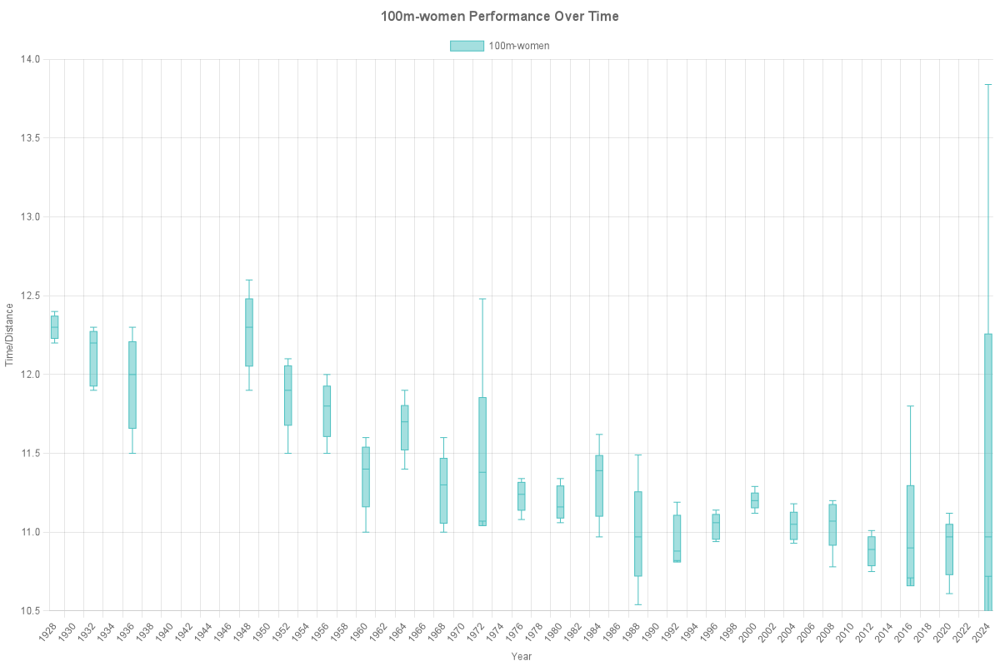
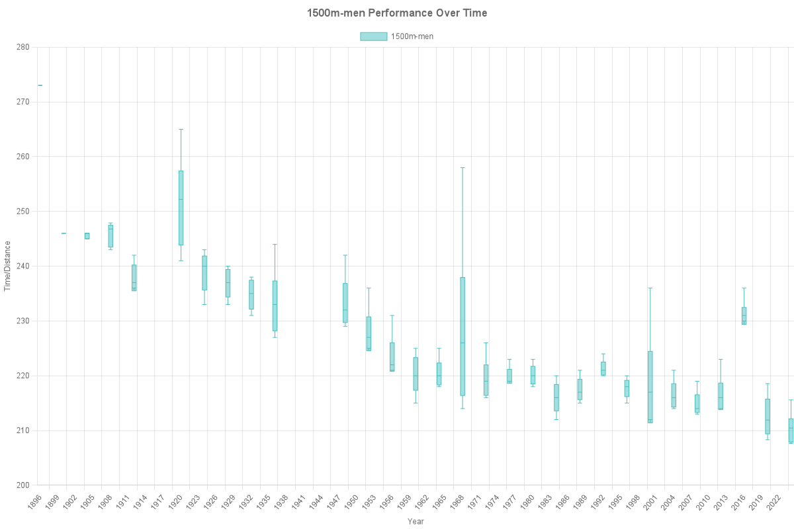
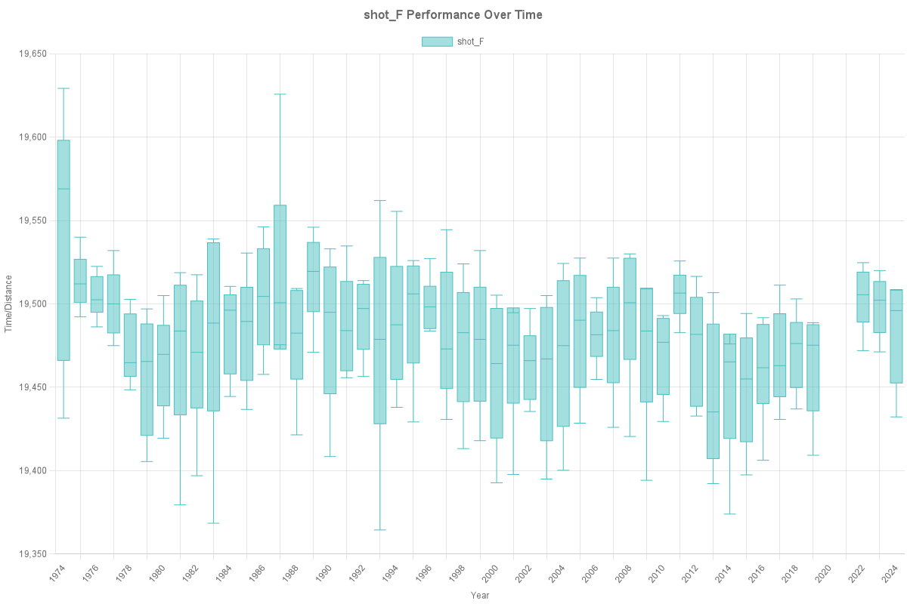

Analysis
Distribution of Performances Over Time
The following boxplots show the distribution of performances comparing CIF Championships (left) and Olympics (right) for each event.
Men's 100m
CIF - Men's 100m

Olympics - Men's 100m
Women's 100m
CIF - Women's 100m

Olympics - Women's 100m

Men's 200m
Olympics - Men's 200m
Olympics - Women's 200m
Men's 400m
CIF - Men's 400m
Olympics - Men's 400m

Women's 400m
CIF - Women's 400m

Olympics - Women's 400m

Men's 1600m/1500m
CIF - Men's 1600m
Olympics - Men's 1500m

Women's 1600m/1500m
CIF - Women's 1600m

Olympics - Women's 1500m

Men's 3200m/5000m
CIF - Men's 3200m
Olympics - Men's 5000m

Women's 3200m/5000m
CIF - Women's 3200m
Olympics - Women's 5000m

Men's High Jump
CIF - Men's High Jump
Olympics - Men's High Jump
Women's High Jump
CIF - Women's High Jump
Olympics - Women's High Jump

Men's Long Jump
CIF - Men's Long Jump

Olympics - Men's Long Jump
Women's Long Jump
CIF - Women's Long Jump
Olympics - Women's Long Jump

Triple Jump (Olympics Only)
Olympics - Men's Triple Jump

Olympics - Women's Triple Jump
Men's Shot Put
CIF - Men's Shot Put
Olympics - Men's Shot Put

Women's Shot Put
CIF - Women's Shot Put

Olympics - Women's Shot Put

Men's Discus
CIF - Men's Discus
Olympics - Men's Discus

Women's Discus
CIF - Women's Discus

Olympics - Women's Discus
Year to Year Improvements for Californian High Schoolers
100m Womens: 0.13%
100m Mens: 0.06%
1600m Womens: 0.19%
1600m Mens: 0.05%
3200m Womens: 0.09%
3200m Mens: 0.05%
400m Womens: 0.14%
400m Mens: 0.03%
discus Womens: 0.03%
discus Mens: 0.05%
hj Womens: 0.00%
hj Mens: 0.00%
lj Womens: 0.00%
lj Mens: 0.00%
pv Womens: 0.00%
pv Mens: 0.00%
shot Womens: 0.01%
shot Mens: 0.01%
Year to Year Improvements for Olympic Athletes
100m Mens: 0.66%
100m Womens: 0.37%
1500m Mens: 0.85%
1500m Womens: 0.27%
200m Mens: 0.03%
200m Womens: 0.65%
400m Mens: 0.70%
400m Womens: 0.62%
5000m Mens: 0.43%
5000m Womens: 0.47%
discus-throw Mens: -2.53%
discus-throw Womens: -3.08%
high-jump Mens: -1.20%
high-jump Womens: -1.28%
long-jump Mens: -4.49%
long-jump Womens: -1.19%
shot-put Mens: -1.98%
shot-put Womens: -2.29%
triple-jump Mens: -0.91%
triple-jump Womens: 0.01%
Further Research
Further areas to analyze include Indoor Track and Field Competition, Cross Country, and the NCAAs. Notably, the introduction of more and more international athletes and older athletes look to have impacted the competitiveness of Collegiate Track and Field.